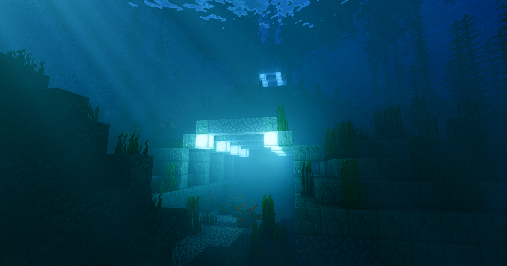
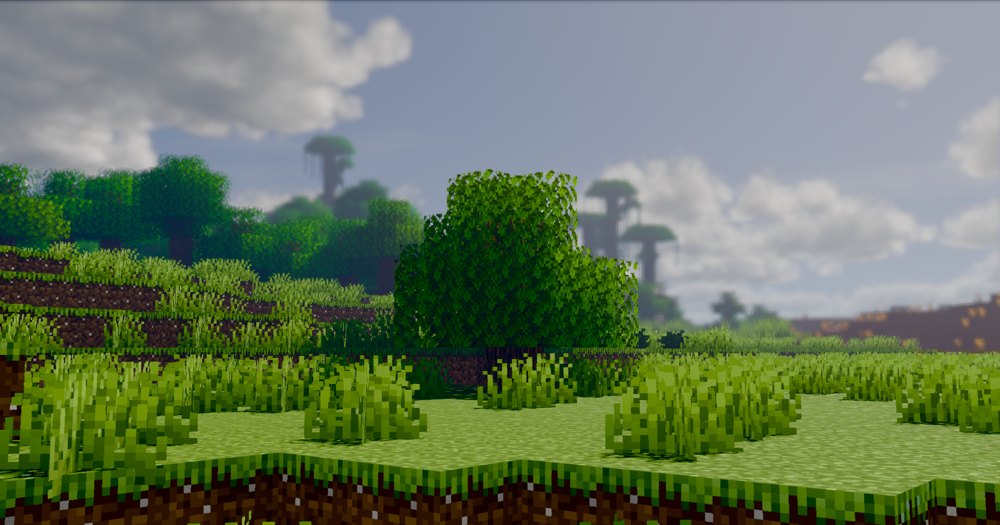
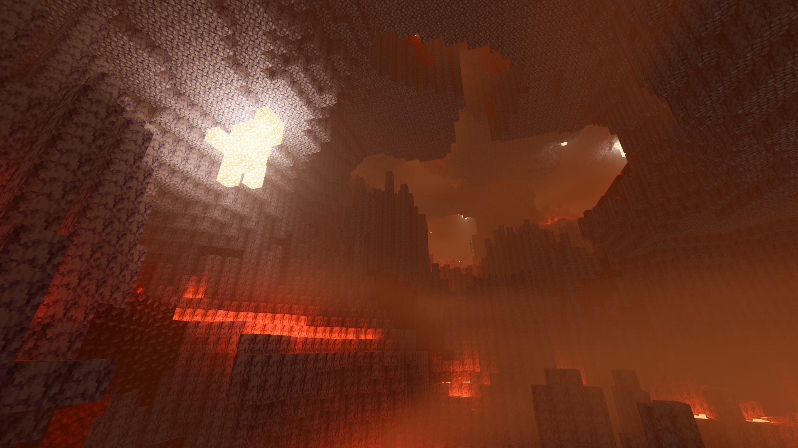
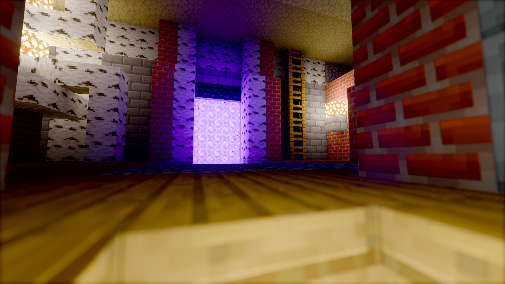
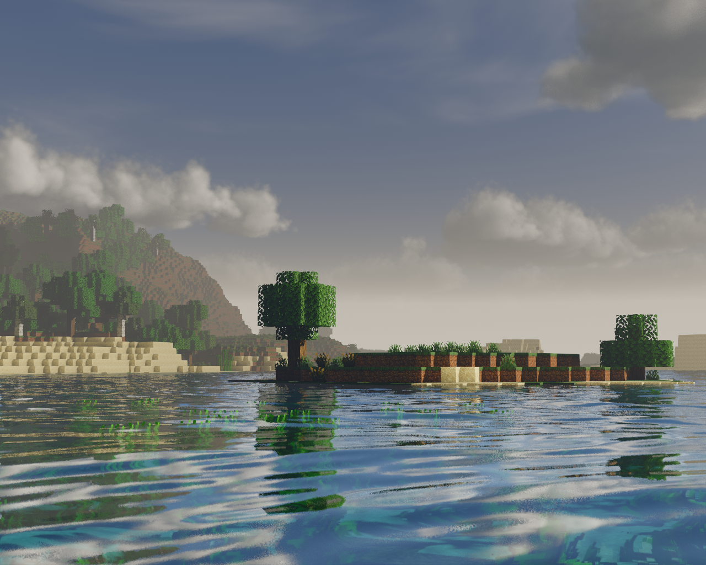
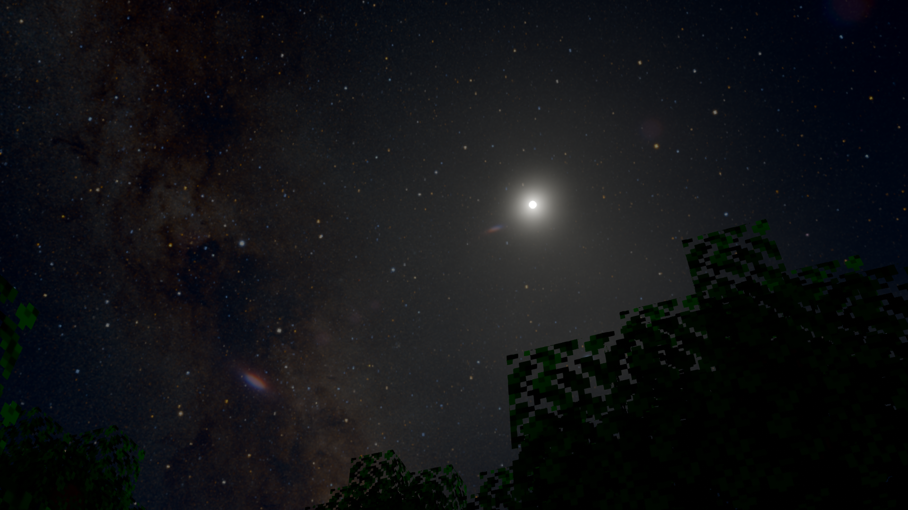

click the dropdown and then 'Source code (zip)'
Bear in mind that this is an alpha, so things may be missing or broken. If you encounter issues, please let me know by submitting a Github Issue!
Glint is my shaderpack for Minecraft. It's still in development, but available to download in alpha!
Bear in mind that this is an alpha, so things may be missing or broken. If you encounter issues, please let me know by submitting a Github Issue!






Want to see more? Check out #jbritains-shaderpacks in the shaderLABS Discord Server.